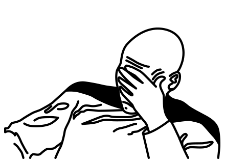
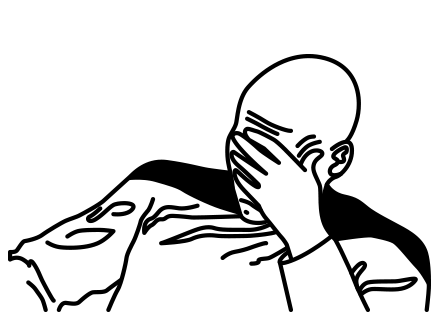

CSS — язык программирования
Никита Дубко, разработчик интерфейсов
Никита Дубко, Яндекс
Никита Дубко, разработчик интерфейсов

Целью доклада не является разжигание возмущения, горение седалищ и оскорбление чувств программистов. Докладчик не собирается заканчивать спикерскую карьеру таким изысканным способом. Любое нарушение мировосприятия после этого доклада целиком и полностью на совести самого слушателя. Если это кто-то ещё читает, интересный факт: люди не чихают во сне. И вы прямо сейчас видите свой нос.
 cdtcha.narod.ru
cdtcha.narod.ru


 Lara Schenck | Algorithms in CSS | CSS Day 2019
Lara Schenck | Algorithms in CSS | CSS Day 2019
| Императивный подход | Декларативный подход |
|---|---|
|
Республика Татарстан, Иннополис, ул. Университетская, дома №1 и №7, 12 и 13 октября |
// псевдокод
var container = getContainer();
var containerSize = container.getSize();
var containerPosition = container.getPosition();
var element = getElement();
var elementSize = element.getSize();
var x = (containerSize.width - elementSize.width) / 2;
var y = (containerSize.height - elementSize.height) / 2;
element.setPosition(
containerPosition.x + x,
containerPosition.y + y
);.container {
display: flex;
justify-content: center;
align-items: center;
}Предметно-ориентированный язык (англ. domain-specific language, DSL — «язык, специфический для предметной области») — язык программирования, специализированный для конкретной области применения (в противоположность языку общего назначения, применимому к широкому спектру областей и не учитывающему особенности конкретных сфер знаний).
ru.wikipedia.org/wiki/Предметно-ориентированный_языкВысокоуровневый язык программирования — язык программирования, разработанный для быстроты и удобства использования программистом. Основная черта высокоуровневых языков — это абстракция, то есть введение смысловых конструкций, кратко описывающих такие структуры данных и операции над ними, описания которых на машинном коде (или другом низкоуровневом языке программирования) очень длинны и сложны для понимания.
ru.wikipedia.org/wiki/Высокоуровневый_язык_программированияclip-path: circle(25%);class ClipPath final : public Longhand {
public:
constexpr ClipPath() : Longhand(CSSPropertyID::kClipPath, kInterpolable | kProperty, '\0') { }
const char* GetPropertyName() const override;
const WTF::AtomicString& GetPropertyNameAtomicString() const override;
const char* GetJSPropertyName() const override;
const CSSValue* ParseSingleValue(
CSSParserTokenRange&,
const CSSParserContext&,
const CSSParserLocalContext&
) const override;
const CSSValue* CSSValueFromComputedStyleInternal(
const ComputedStyle&,
const SVGComputedStyle&,
const LayoutObject*,
bool allow_visited_style
) const override;
void ApplyInitial(StyleResolverState&) const override;
void ApplyInherit(StyleResolverState&) const override;
void ApplyValue(StyleResolverState&, const CSSValue&) const override;
};display: grid;

 Universality in Elementary Cellular Automata
Universality in Elementary Cellular Automata
input:not(:checked) + input:checked + input:checked
+ * + * + * + * + * + * + * + * + * + * + *
+ * + * + * + * + * + * + * + * + * + * + * {
--cell-bg-color: hotpink;
--cell-num-color: white;
--cell-content: "X";
--cell-cursor: pointer;
}Язык программи́рования — формальный язык, предназначенный для записи компьютерных программ. Язык программирования определяет набор лексических, синтаксических и семантических правил, определяющих внешний вид программы и действия, которые выполнит исполнитель (обычно — ЭВМ) под её управлением.
ru.wikipedia.org/wiki/Язык_программированияКомпью́терная програ́мма —
1) комбинация компьютерных инструкций и данных, позволяющая аппаратному обеспечению вычислительной системы выполнять вычисления или функции управления (стандарт ISO/IEC/IEEE 24765:2010);
2) синтаксическая единица, которая соответствует правилам определённого языка программирования, состоящая из определений и операторов или инструкций, необходимых для определённой функции, задачи или решения проблемы (стандарт ISO/IEC 2382-1:1993)
Задача: разместить элемент по центру контейнера.
Инструкции:
.center {
position: absolute;
left: 50%;
top: 50%;
transform: translate(-50%, -50%);
} CSS Algorithms
CSS Algorithms
border-style: SOLID.promo {
display: block;
padding: 20px;
margin-bottom: 20px;
background-color: #09f;
color: #fff;
text-shadow: 0 0 1px rgba(0,0,0,0.25);
border-radius: 4px;
}.island {
display: block;
padding: 20px;
margin-bottom: 20px;
}
.promo {
background-color: #09f;
color: #fff;
text-shadow: 0 0 1px rgba(0,0,0,0.25);
border-radius: 4px;
} ru.bem.info
ru.bem.info
npm install -g hermione Hello Houdini: Placeholder Box
Hello Houdini: Placeholder Box
@mixin block($w, $h, $d, $x, $y, $z, $color, $angle: '0, 0, 0, 0') {
transform: translate3d($x, $y, $z) rotate3d(#{$angle});
will-change: transform;
.front { @include front($w, $h, $d, $color); }
.back { @include back($w, $h, $d, $color); }
.right { @include right($w, $h, $d, darken($color, 10%)); }
.left { @include left($w, $h, $d, darken($color, 10%)); }
.top { @include top($w, $h, $d, darken($color, 5%)); }
.bottom { @include bottom($w, $h, $d, darken($color, 5%)); }
}:root {
--r: 255;
--g: 20;
--b: 147;
--primary-color: rgb(var(--r), var(--g), var(--b));
}
.my-element {
--e-width: 200px;
--e-border-width: 20px;
background-color: var(--primary-color);
width: calc(var(--e-width) + var(--e-border-width));
}<div class="one two">I have 40px margin</div>:root {
--root-offset: 20px;
}
.one {
--offset: 40px;
}
.two {
margin: var(--offset, var(--root-offset, 30px));
}<div class="two">I have 20px margin</div>:root {
--root-offset: 20px;
}
.one {
--offset: 40px;
}
.two {
margin: var(--offset, var(--root-offset, 30px));
} DRY Switching with CSS Variables: The Difference of One Declaration
DRY Switching with CSS Variables: The Difference of One Declaration
.animal {
--has-mustache: 1;
--has-paws: 1;
--has-tail: 1;
--has-documents: calc(
var(--has-mustache, 0) *
var(--has-paws, 0) *
var(--has-tail, 0)
);
}.language {
--undefined-is-not-a-function: 1;
--is-js: var(--undefined-is-not-a-function, 0);
--is-css: calc(
1 - var(--is-js)
);
}.human {
--can-frontend: 1;
--can-backend: 0;
--is-developer: calc(
var(--can-frontend) * var(--can-backend) +
var(--can-frontend) * (1 - var(--can-backend)) +
(1 - var(--can-frontend)) * var(--can-backend)
);
}
⬇️

.human {
--can-frontend: 1;
--can-backend: 0;
--is-developer: calc(
var(--can-frontend) +
(1 - var(--can-frontend)) * var(--can-backend)
);
}.human {
--can-frontend: 1;
--can-backend: 0;
--is-developer: clamp(
0,
calc(var(--can-frontend) + var(--can-backend)),
1)
);
}width: clamp(10px, 4em, 80px);
width: max(10px, min(4em, 80px));.human {
--can-frontend: 1;
--can-backend: 0;
/* not (A or B) = (not A) and (not B) */
--is-developer: calc(1 -
(1 - var(--can-frontend)) * (1 - var(--can-backend))
);
} Logical Operations with CSS Variables
Logical Operations with CSS Variables
 [css-values] Trigonometric functions
[css-values] Trigonometric functions
 [css-values] Trigonometric functions
[css-values] Trigonometric functions
 drafts.csswg.org/css-values/#math
drafts.csswg.org/css-values/#math
Как —Ö–æ—Ä–æ—à–æ вы –∑–Ω–∞–µ—Ç–µ CSS? üë®ü躂Äçüè´
Даны следующие классы:
.red { color: red; }
.blue { color: blue; }Какого цвета должны быть эти дивы?
<div class="red blue">
<div class="blue red"> 

 cssbattle.dev
cssbattle.dev
<b style="background: #0B2429;
color: #F3AC3C;
zoom: 200;
left: -5.59px;
top: -8.3px;
position: absolute">k#input[value='l'i] ~ #results #result55,
#input[value='la'i] ~ #results #result55,
#input[value='lau'i] ~ #results #result55,
#input[value='laur'i] ~ #results #result55,
#input[value='laura'i] ~ #results #result55 {
display: block;
}#option[id]:checked ~ #results #result12,
#option[id]:checked ~ #results #result55 {
display: block;
}body {
font-family: sans-serif;
}
h1, p {
font-family: "no-parens", sans-serif;
}
/* https://github.com/adobe-fonts/adobe-blank */
@font-face {
font-family: no-parens;
src: url("...");
unicode-range: U+0028, U+0029; /* () */
} Proposal: Custom functions for modifying CSS values
Proposal: Custom functions for modifying CSS values
CSS.registerComputedValueHook({
inputProperties: ["transform", "--slide-*"],
outputProperties: ["transform"],
computedValue: function(input, output) {
const tx = input.get("--slide-x");
const ty = input.get("--slide-y");
const translate = new CSSTranslate(tx, ty);
output.set("transform",
new CSSTransformValue(
translate,
...input.get('transform')
)
);
}
});CSS.registerFunction({
"name": "--darken",
"inputArguments": ["<color>", "<percentage>"],
}, (color, percent) => {
const newColor = color.toHSL();
newColor.lightness *= (1 - percent.value/100);
return newColor;
});.element {
color: --darken(tomato, 12%);
}CSS.registerFunction(
{
"name": "--random",
"per": "element",
},
() => CSS.number(Math.random())
);:root {
--sidebar-width: 400px;
}
.closed {
--sidebar-width: 80px;
}
body {
transition: --sidebar-width 1s;
}// JavaScript
CSS.registerProperty({
name: '--sidebar-width',
syntax: '<length>',
inherits: true,
initialValue: '80px'
});/* CSS */
@property --sidebar-width {
syntax: "<length>",
inherits: true,
initialValue: "80px"
} KharkivCSS #4 2018 — Микита Дубко "Houdini — CSS, который JavaScript"
KharkivCSS #4 2018 — Микита Дубко "Houdini — CSS, который JavaScript"